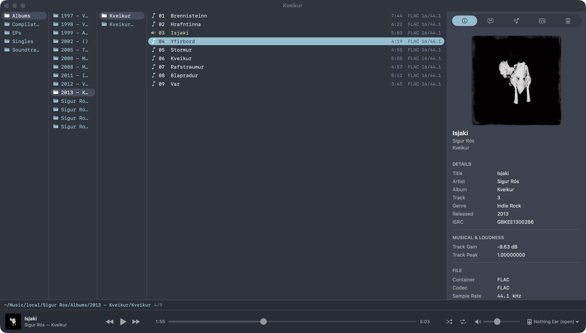
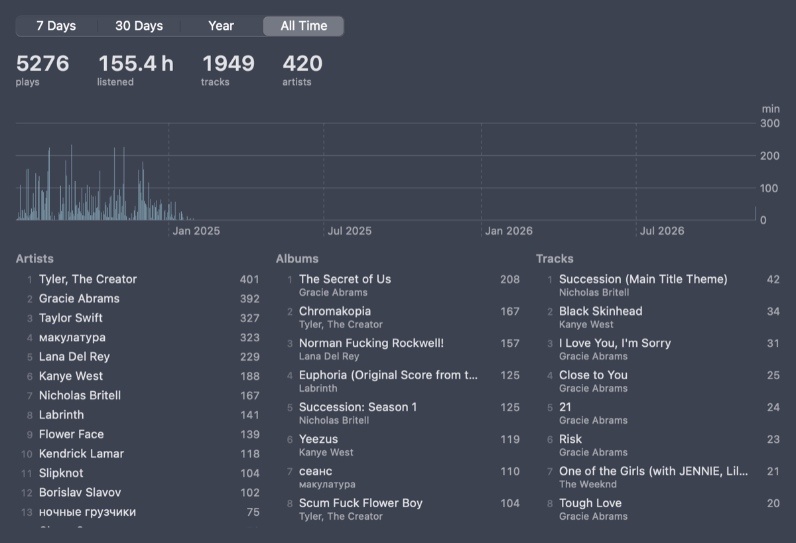
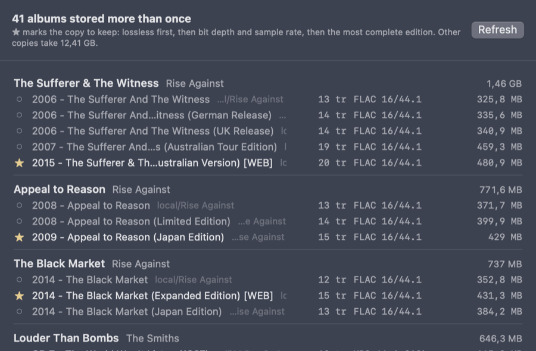
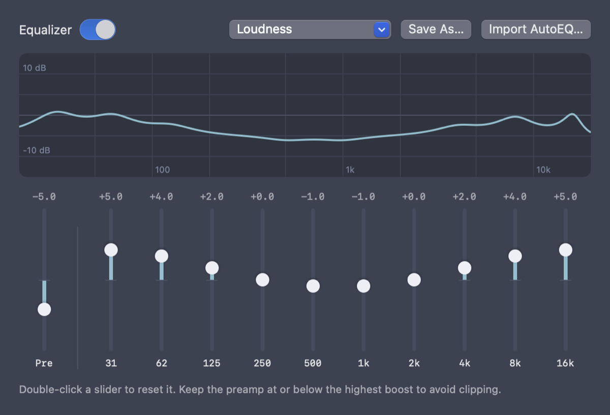
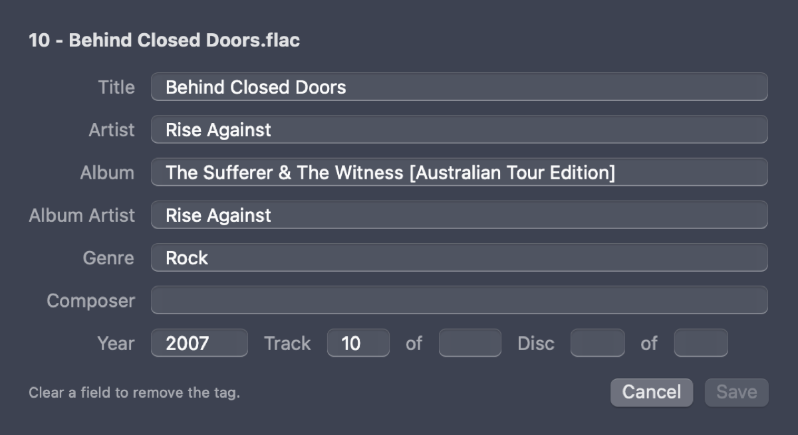
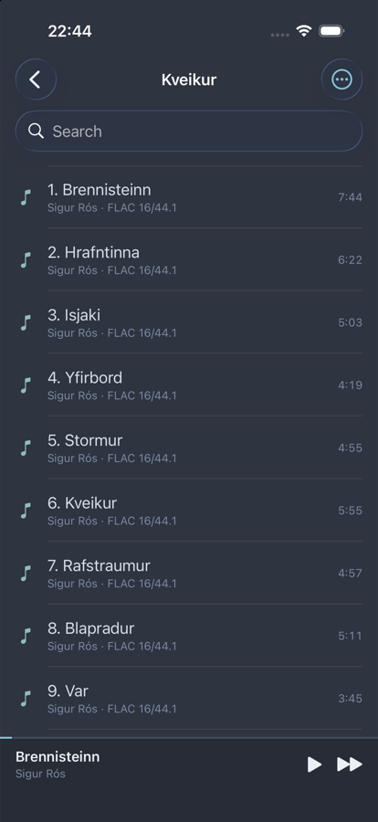
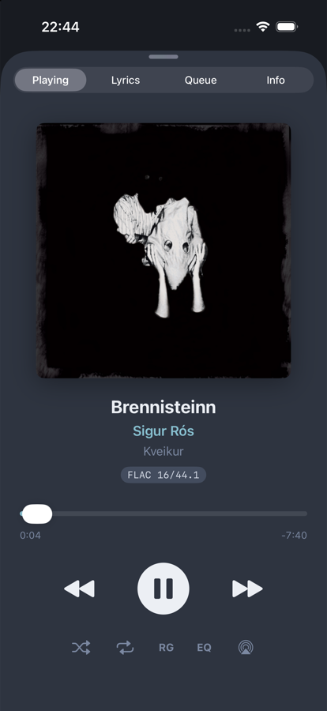
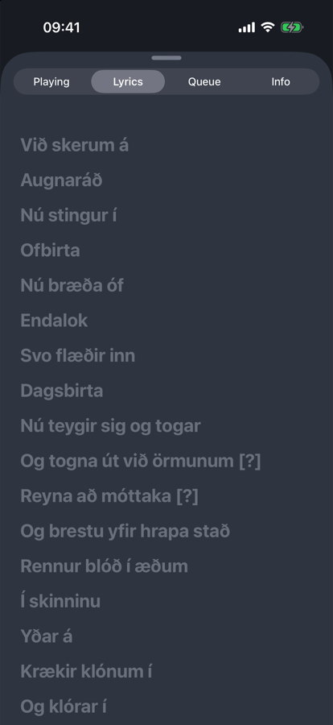
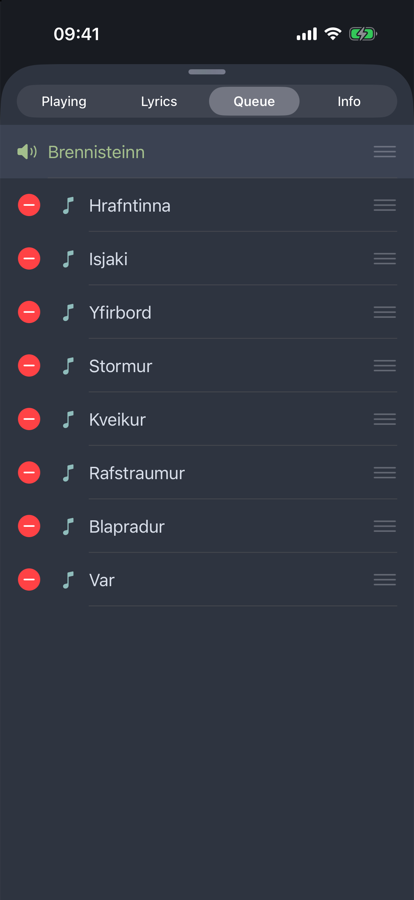
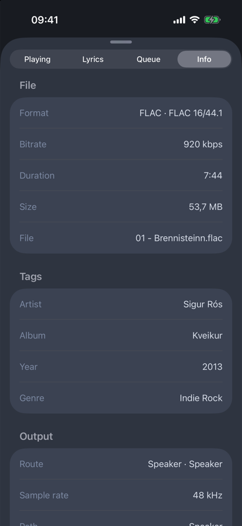

A native macOS music player for people who keep their music in folders.
Browse like yazi, drive it with vim keys, and see exactly what reaches your DAC. No import, no library to manage: your folders are the library.
Apple Silicon · macOS 15 or later

A sensible minimum, done properly. Everything is keyboard-reachable, nothing destructive is.
Parent columns, the current folder and a live preview, yazi-style. Fuzzy jump to any folder, search tracks across the library, a command palette for everything else.
Sample-accurate gapless playback. Matches the device sample rate to the file, optional exclusive (hog) mode, and an inspector that shows the full signal path to the DAC.
FLAC, ALAC, AAC, MP3, WAV, AIFF, Ogg Vorbis and Opus. Single-image rips with a CUE sheet play as separate tracks, with sheet encodings detected for you.
Track or album gain from tags, or measured (EBU R128) for untagged files. A 10-band EQ with presets and AutoEQ headphone profile import.
Sidecar .lrc, embedded tags, then LRCLIB and Genius. Synced lines scroll with the music, and there is a full-screen karaoke view.
Live spectrum, level meters, goniometer, waveform, loudness and a spectrogram for the track that is playing.
Every play is stored locally. Top artists, albums and tracks by week, month, year or all time, plus Most Played, Recently Played, Recently Added and Never Played lists.
Last.fm and ListenBrainz, counted on real listening time and queued offline. Your Last.fm history flows back in, so the Mac and the phone share statistics.
Edit tags (FLAC, MP3, M4A), rename and move to Trash from the right-click menu. None of it has a key binding, so a stray keystroke never deletes anything.
Finds albums and tracks stored more than once and marks the copy worth keeping: lossless first, then bit depth and sample rate, then the most complete edition.
Stop after 15 to 90 minutes with a gentle fade, or at the end of the current track.
About 90 MB of memory, zero CPU when paused: the audio engine shuts down after a short pause and resumes on the exact sample. State comes back on launch.
Taken on a real library, nothing staged.









Hold ⌘ for a moment inside the app to see every shortcut. The basics:
.dmg from releases.xattr -dr com.apple.quarantine /Applications/Kveikur.app
Kveikur checks for new releases once a day.
Xcode 16 or newer, no third-party dependencies.
git clone https://github.com/asahium/kveikur cd kveikur make run # build and open make test # unit tests make ios-device # iPhone beta, free Apple ID